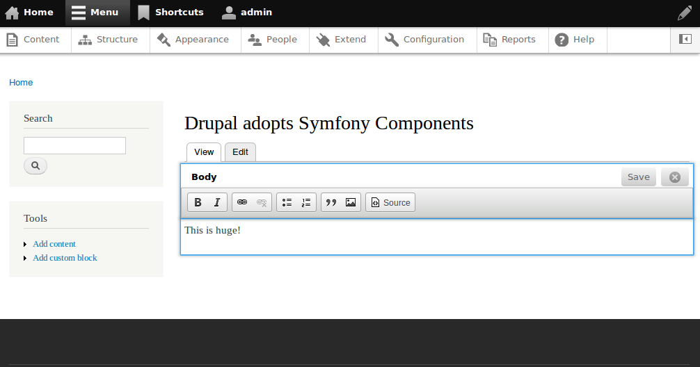

Modernizing Drupal
Using Symfony 2
Presented by Larry Garfield
@Crell
- Senior Architect, Palantir.net
- Drupal 8 Web Services Lead
- Drupal Representative, PHP-FIG
- Advisor, Drupal Association
- General busybody
Speaking of Drupal

2% of the Web runs Drupal
Over 20,000 new Drupal 7 sites every month

Conclusion
Drupal is awesome!
Entities/Fields
Click together your own data structure

Rules
Click together your own business logic

Views
Click together your own lists and queries

Drupal
Click together your own site


Time to kick some ass
in Drupal 8

Just one teeny little problem...

Drupal is an 12 year old, PHP 4-based extensible Slashdot clone originally written by a Belgian college kid.


What are we using?
- HttpFoundation
- HttpKernel
- Routing
- HttpFoundation
- DependencyInjection
- EventDispatcher
- Symfony CMF Routing
Odds and ends
- ClassLoader
- YAML
- Serializer
- Validator
How do you convert a system that big?
One bite at a time
Accept that it won't all be done
Dependency Injection
class Drupal {
protected static $container;
public static function setContainer(ContainerInterface $container) {
static::$container = $container;
}
public static function service($id) {
return static::$container->get($id);
}
public static function entityManager() {
return static::$container->get('plugin.manager.entity');
}
public static function database() {
return static::$container->get('database');
}
}
Eew, a service locator?
One global singleton instead of dozens
Migrate services over time
Wherever we land still works
Remove it... eventually
book.services.yml
services:
book.manager:
class: Drupal\book\BookManager
arguments: ['@database']
Routing
index.php
require_once __DIR__ . '/core/includes/bootstrap.inc';
drupal_handle_request();
drupal_handle_request()
function drupal_handle_request($test_only = FALSE) {
// Initialize the environment, load settings.php,
// activate a PSR-0 class autoloader with required namespaces registered.
drupal_bootstrap(DRUPAL_BOOTSTRAP_CONFIGURATION);
$kernel = new DrupalKernel('prod', FALSE, drupal_classloader(), !$test_only);
$kernel->boot();
drupal_bootstrap(DRUPAL_BOOTSTRAP_CODE);
// Create a request object from the HttpFoundation.
$request = Request::createFromGlobals();
$response = $kernel->handle($request)->prepare($request)->send();
$kernel->terminate($request, $response);
}
HttpKernel
Same as it ever was
CMF Router
Collaboration FTW!


system.routing.yml
system.cron:
pattern: '/cron/{key}'
defaults:
_controller: '\Drupal\system\CronController::run'
requirements:
_access_system_cron: 'TRUE'
system.machine_name_transliterate:
pattern: '/machine_name/transliterate'
defaults:
_controller: '\Drupal\system\MachineNameController::transliterate'
requirements:
_permission: 'access content'
aggregator.routing.yml
aggregator_admin_overview:
pattern: 'admin/config/services/aggregator'
defaults:
_content: '\Drupal\aggregator\Routing\AggregatorController::adminOverview'
requirements:
_permission: 'administer news feeds'
aggregator_admin_settings:
pattern: 'admin/config/services/aggregator/settings'
defaults:
_form: '\Drupal\aggregator\Form\SettingsForm'
requirements:
_permission: 'administer news feeds'
Route Enhancers
class ContentControllerEnhancer implements RouteEnhancerInterface {
protected $types = array(
'drupal_dialog' => 'controller.dialog:dialog',
'drupal_modal' => 'controller.dialog:modal',
'html' => 'controller.page:content',
);
public function enhance(array $defaults, Request $request) {
if (empty($defaults['_controller']) && !empty($defaults['_content'])) {
$type = $this->negotiation->getContentType($request);
if (isset($this->types[$type])) {
$defaults['_controller'] = $this->types[$type];
}
}
return $defaults;
}
}
Any _content route can be a page, or modal, or ajax replacement, automatically!
That's the power of mime types
(_form routes soon as well)
Built-in ParamConverter
class ParamConverterManager implements RouteEnhancerInterface {
public function enhance(array $defaults, Request $request) {
$converters = array();
$route = $defaults[RouteObjectInterface::ROUTE_OBJECT];
foreach ($this->converters as $converter) {
$converter->process($defaults, $route, $converters);
}
// ...
return $defaults;
}
}
Dynamic routes
class RouteSubscriber implements EventSubscriberInterface {
/**
* Adds routes on the fly.
*/
public function dynamicRoutes(RouteBuildEvent $event) {
$collection = $event->getRouteCollection();
foreach ($user_settings as $thing) {
$collection->add('route.' . $thing->name, new Route('/thing/' . $thing->name, ...));
}
}
static function getSubscribedEvents() {
$events[RoutingEvents::DYNAMIC] = 'dynamicRoutes';
return $events;
}
}
Controllers
It's just ControllerResolver
- Function (once we remove a BC shiv)
- POPO method
- ContainerAware object method
- Services (methods)
- Closures (but we don't use 'em)
- ControllerInterface
ControllerInterface
interface ControllerInterface {
/**
* Instantiates a new instance of this controller.
*
* @param ContainerInterface $container
* The service container this object should use.
*/
public static function create(ContainerInterface $container);
}
ControllerInterface
<?php
class AggregatorController implements ControllerInterface {
protected $entityManager;
protected $database;
public static function create(ContainerInterface $container) {
return new static(
$container->get('plugin.manager.entity'),
$container->get('database')
);
}
public function __construct(EntityManager $entity_manager, Connection $database) {
$this->entityManager = $entity_manager;
$this->database = $database;
}
public function feedAdd() {
$feed = $this->entityManager
->getStorageController('aggregator_feed')
->create(array(
'refresh' => 3600,
'block' => 5,
));
// ...
}
}
Controllers
- Return Response
- Return string
- Return "render array"
Depends on your use case
Ajax API
AjaxResponse extends Response
<?php
function system_date_time_lookup($form, &$form_state) {
$format = '';
if (!empty($form_state['values']['date_format_pattern'])) {
$format = t('Displayed as %date_format', array(
'%date_format' => format_date(REQUEST_TIME, 'custom', $form_state['values']['date_format_pattern']))
);
}
$response = new AjaxResponse();
$response->addCommand(new ReplaceCommand('#format', '<small id="format">' . $format . '</small>'));
return $response;
}
REST
REST module
- Based on Serializer Component
- HAL out of the box
- Any entity (or other resource)
- Same URI as HTML page (soon)
- Cookie-and-token security
- HTTP Auth needs work
REST: Entities
- GET /node/1
- DELETE /node/1
- POST /node
- PATCH /node/1
REST: Log entries
- GET /dblog/1
REST: Your resource
interface ResourceInterface extends PluginInspectionInterface {
/**
* @return \Symfony\Component\Routing\RouteCollection
*/
public function routes();
/**
* Provides an array of permissions suitable for hook_permission().
*/
public function permissions();
/**
* Returns the available HTTP request methods on this plugin.
*/
public function availableMethods();
}
Serializer
- Can REST offer any supported format
- New format: new encoder
- New object type: new normalizer
Anything non-Symfonic?
Plugins
User-configurable logic
- Discovery
- Instantiation (factory)
Managers
class ArchiverManager extends PluginManagerBase {
public function __construct(\Traversable $namespaces) {
$this->discovery = new AnnotatedClassDiscovery('Archiver', $namespaces);
$this->discovery = new AlterDecorator($this->discovery, 'archiver_info');
$this->discovery = new CacheDecorator($this->discovery, 'archiver_info');
}
public function createInstance($plugin_id, array $configuration = array()) {
$plugin_definition = $this->discovery->getDefinition($plugin_id);
$plugin_class = DefaultFactory::getPluginClass($plugin_id, $plugin_definition);
return new $plugin_class($configuration['filepath']);
}
public function getInstance(array $options) {
return $this->mapper->getInstance($options);
}
}
Implementation
POPO
/**
* Defines a archiver implementation for .tar files.
*
* @Plugin(
* id = "Tar",
* title = @Translation("Tar"),
* description = @Translation("Handles .tar files."),
* extensions = {"tar", "tgz", "tar.gz", "tar.bz2"}
* )
*/
class Tar implements ArchiverInterface {
public function __construct($file_path) { }
public function add($file_path) { }
public function remove($file_path) { }
public function extract($path, array $files = array()) { }
}
Entities
- Basic data object system
- "Don't call it an ORM" (even though it is)
- Version 3, basically
- ... and $node->save() works now!
Entities
Why aren't you guys just using Doctrine?
- Lots of existing architecture
- Doctrine is a very different model
- Need far more runtime behavior
Disk-based configuration
- No more DB configuration!
- (Generated) YAML configuration (YAML Component)
- Stage/import/deploy built-in
book.settings.yml
allowed_types:
- book
block:
navigation:
mode: 'all pages'
child_type: book
$settings = $configManager->get('book.settings');
$types = $settings->get('allowed_types');
Hooks
- Procedural events/AOP/config in one
- Will live through Drupal 8
- Expect bridge to EventDispatcher
- Don't expect them in Drupal 9
More sharing
Twig
Almost there, deadline is 17 June
(Help would be much appreciated)
Doctrine annotations
Not the ORM, just the annotations library

Guzzle
No wrapper, just Guzzle

PHPUnit
(Combined with Simpletest, sorry)
PSR-3 Logger
Zend_Feed?
Maybe, now that it has fewer dependencies
Other goodies
HTML5

Responsive

No more IE 8

WYSIWYG

Inline editing
Let's work together
Collaboration
- Symfony2: MIT License
- Drupal: GPL License
- Code only flows one way. :-(
- Work can begin anywhere :-)
Coordination
We're coming upstream
- Symfony2 "flash messages": Too simple for us
drupal_set_message()- Make less code in the world!
- Drupalers designed needs for improved API
- Drak (of Zikula CMS) implemented it
- Added in Symfony 2.1.
- Drupal issue
File Streaming
- Readfile()? fpassthru()? X-Sendfile? One response class.
- Fabien says it should be in HttpFoundation. We agree.
- Added in 2.2
- Added in Drupal 8
- Make less code in the world!
Context, context, context
- Context support in Serializer
- Context support in Validator
That whole Symfony CMF Router thing...
Odds and ends
Great, so when can I use it?
Code freeze: 1 July
We're almost out of time, and need your help
Sprints Friday-Monday
Jumping in
- Come to the sprints
- Checkout the code
- Join #Drupal-Contribute and #Drupal-WSCCI
- Tell us what we're doing wrong (No, really!)
We release when we run out of critical bugs
Hi! I'm very excited about symfony2 framework, though I cannot find a good CMS to use with symfony2. Can any of you recommend any?